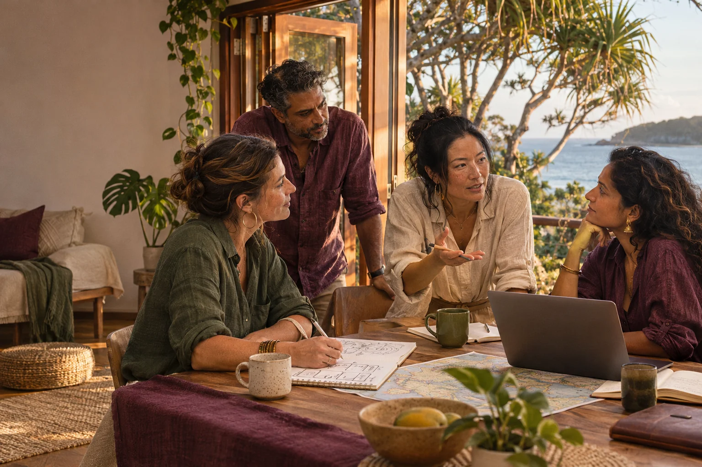
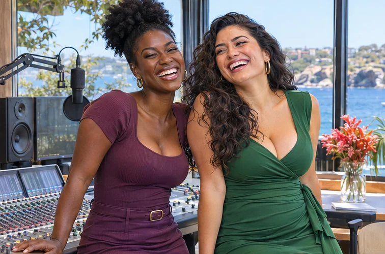

Global Group
Marriages
A new way to think about love and family, from a throuple to a family across countries.
AI-generated scene
Many groups, many ways to share a life
Global Group Marriages is a framework for many independent groups. Three people can form a throuple, and each group can grow to whatever size works for its members. People agree for themselves how they share love, home, care, work and resources. It adds a niche option to the ways people already make families.
The United Nations of Love is the group Luke Nathan Hayes wants to build. He imagines a family business and love marriage across cultures that contributes to world peace through Joyful Responsible Abundance.
Aura of Intelligence could help each person keep their own records, choose what to share and decide when an AI tool needs their approval to act.

A shared life
Work out what people want to share and how to make those commitments practical across homes and countries.

Businesses and creative work
See how Luke's proposal could make room for existing businesses, new collaborations and independent work.
Aura of Intelligence
See how a personal Aura, the Aura Genesis Protocol and the Verse Box could support shared life and work.

A fair say in how AI is used
The worldwide AI buildout takes chips, data centres, power, cooling and people who can keep the equipment running. The prospectus looks at how work might change if superintelligence emerges, and what people and communities can do now to keep a say in the systems they use.
Explore AI and self-sovereigntyFamily law across borders
Marriage, parentage, cohabitation, property, inheritance and migration work differently in each country. These differences call for careful research using official sources and clear separation of current law from possible reform.
Explore the research methodHow laws recognise relationships
Several pairwise relationships may hold legal weight while the group has no shared legal status.
Parentage, property, migration and healthcare each have their own rules.
Explore the project
Relationship constellations
Explore different ways adults could form a household or family.
Household Lab
Work through a scenario about care, roles and practical agreements.
Consent and care
See how people could keep control over their own choices.
AI and self-sovereignty
Connect personal control with local and global infrastructure.
Research method
See how legal sources, gaps and proposed changes are kept distinct.
Document library
Download the prospectus and browse the source documents.